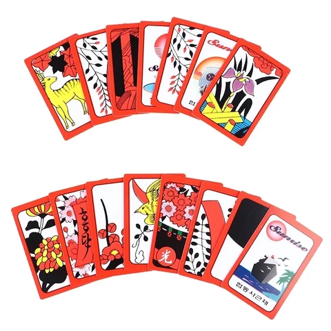

История компании Nintendo
Компания Nintendo была основана в 1889 году в Японии и изначально производила игральные карты hanafuda.
В середине XX века она начала искать новые направления бизнеса — от игрушек до игровых автоматов.
Настоящий прорыв произошёл в 1980-х, когда Nintendo выпустила консоль Famicom (за рубежом — Nintendo Entertainment System, NES), возродившую рынок видеоигр после кризиса.

Тогда появились культовые серии — Super Mario, The Legend of Zelda и Metroid, ставшие символами компании.


В 1990-х Nintendo укрепила позиции с консолями Super Nintendo и Nintendo 64, но столкнулась с сильной конкуренцией от Sony и Sega.


Несмотря на спады, компания сумела возродиться с успехом Wii и портативных систем DS и Switch.


Сегодня Nintendo остаётся одним из главных новаторов в игровой индустрии, сочетая традиции и креативный подход к развлечениям.
История компании Nintendo.pdf